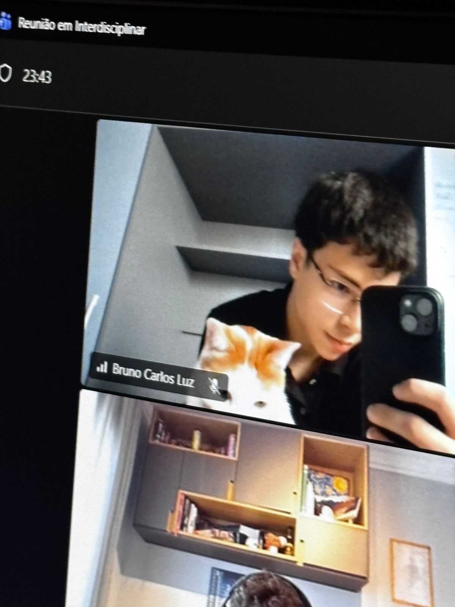
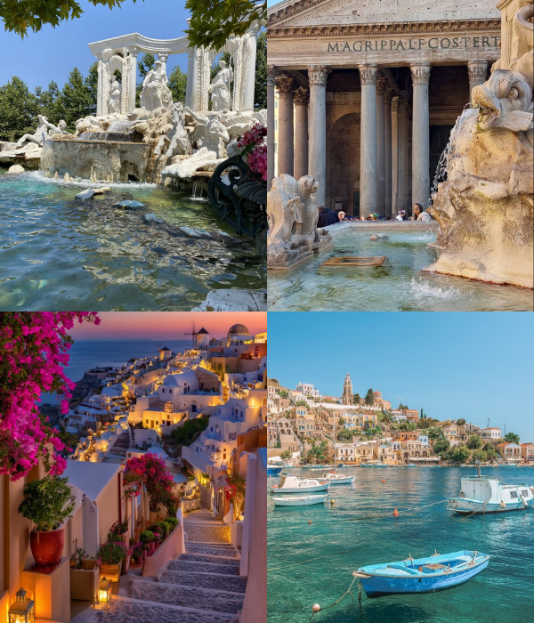
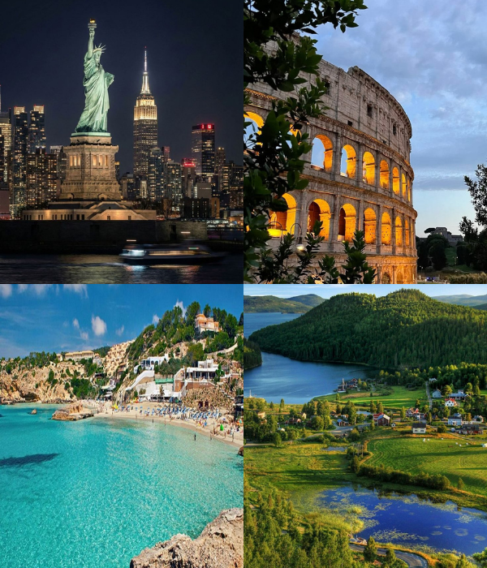
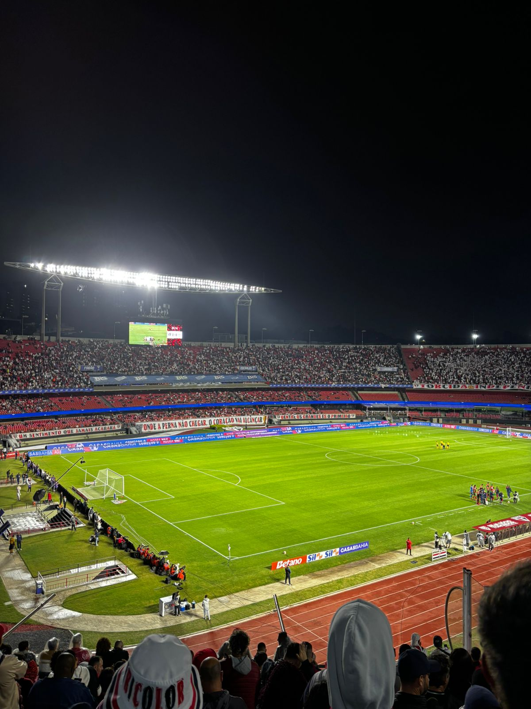
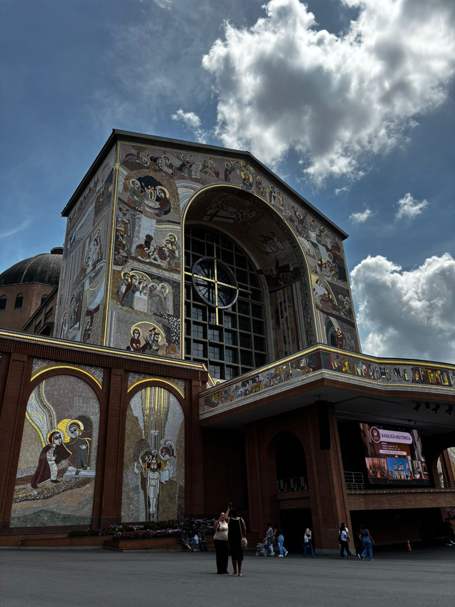

Oii, eu sou o Bruno Luz, tenho 15 anos e sou católico romano desde pequeno.
Eu gosto muito de jogar futsal, lutar MMA, sirvo no plebistério da igreja como
como acólito e amo treinar. Atualmente eu pratico calistenia, porém fui para
a academia durante 8 meses, mas adiei esse sonho para realizar meu
objetivo de passar aqui no germinare.

Esse aqui sou eu e meu gato que invadiu uma reunião do Interdisciplinar,
o nome dele é Galoppo por conta do ex jogador do São Paulo. Sobre meu
interdisciplinar, eu sou um
dos integrantes do grupo Delta do 1ºC e
trabalhamos com a gestão inteligente
da água. Todos os membros desse "site"
são também integrantes do Delta.
Além de nós, o Pedro Pizzi e Gabriel Ribeiro
também são membros desse
inter incrível!
Algumas muitas coisas sobre mim:
Isso foi um pouco sobre mim, agora esses são os lugares que eu quero MUITO visitar:

Acho a grécia muito linda e fiz essa colagem somente para ela.

Nessa foto também tem alguns lugares que sonho em conhecer! Tem as cidades de
Roma e Nova York, a Espanha e a Suécia.
Agora, lugares que eu já fui:

O estádio mais lindo do mundo.

Também já fui a Aparecida.